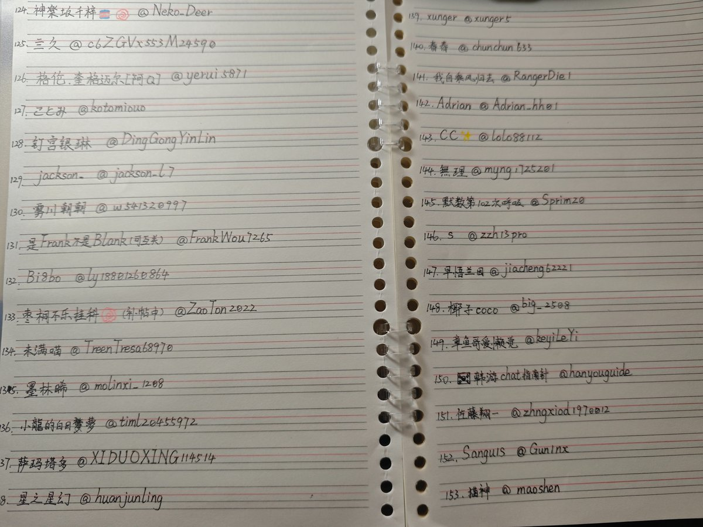
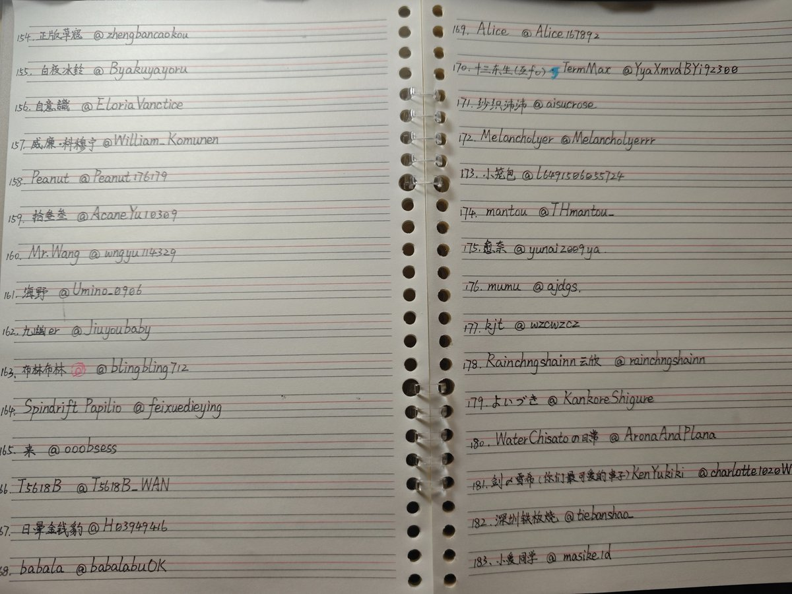
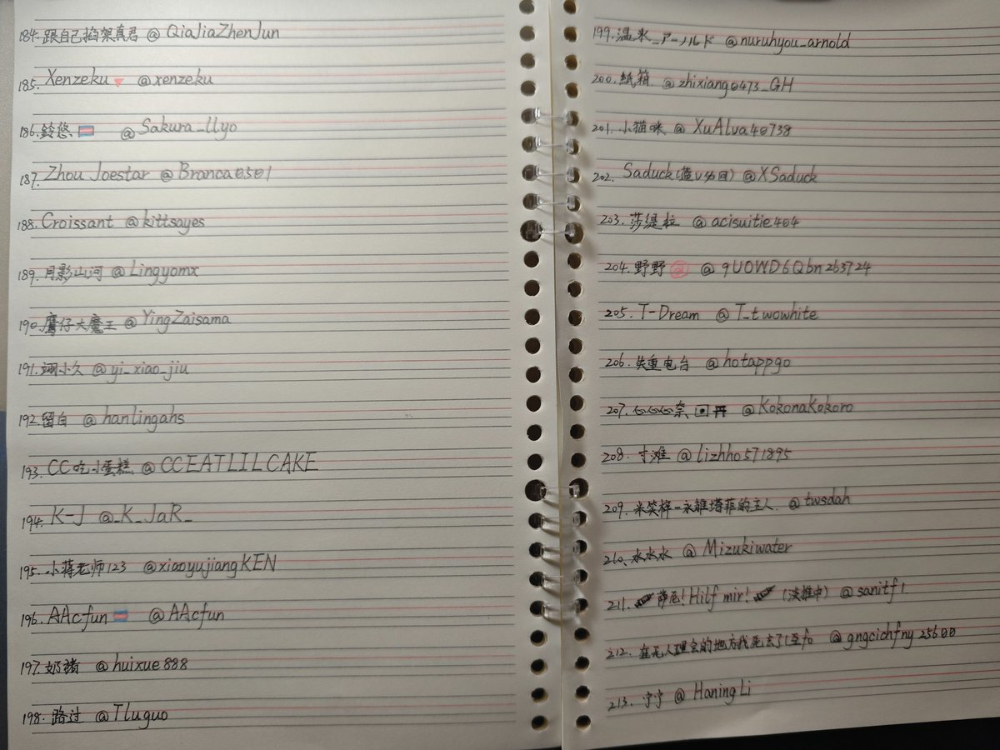
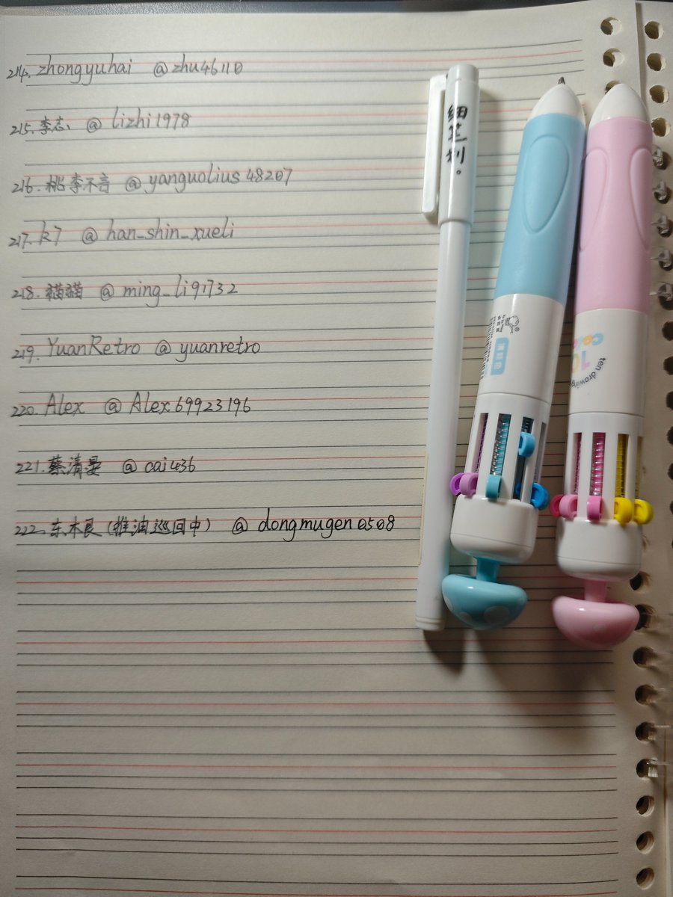

第四弹，一次性写99个ID，完全胜利！
换了新本子和笔，还买了带其他颜色的笔
这两天双取了60多个为了刷关注的，我不在意这些数字，只希望关注是真心喜欢或者真心想交朋友的
因为一次写太多手有点酸所以后面可能没太写好，还有最下面几行不太顺手也不好写
每个互关都有如果没看到自己记得提醒我一下呀


换了新本子和笔，还买了带其他颜色的笔
这两天双取了60多个为了刷关注的，我不在意这些数字，只希望关注是真心喜欢或者真心想交朋友的
因为一次写太多手有点酸所以后面可能没太写好，还有最下面几行不太顺手也不好写
每个互关都有如果没看到自己记得提醒我一下呀




第三弹来了（我能说这个笔不好用吗(´-﹏-`；)）
依旧是按我关注的顺序写的，然后有些朋友是我很早关注了这几天回关的，特意找了一下以免遗漏。如果你没有找到你的名字大概率就是在前面两期吧(¯▽¯)ゞ https://t.co/DU8nNYBhCn https://t.co/dqNgYzCfA1
依旧是按我关注的顺序写的，然后有些朋友是我很早关注了这几天回关的，特意找了一下以免遗漏。如果你没有找到你的名字大概率就是在前面两期吧(¯▽¯)ゞ https://t.co/DU8nNYBhCn https://t.co/dqNgYzCfA1